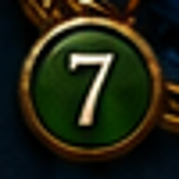
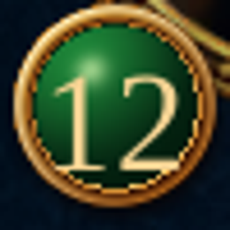
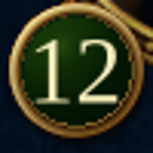

Stock badge · R5
Original reference and enlarged actual Unity crops. Counts remain live; the original shows 7 and the test inventory shows 12.
Original
Before
Current
Dark forest green, restrained gold, pale lettering, and visible-glyph centering. Multi-digit counts shrink within the circular face. Native mesh and live local font approximate the source; the original font identity remains unverified.
Actual Unity page captures · Rim cleanup and darker metal · Report